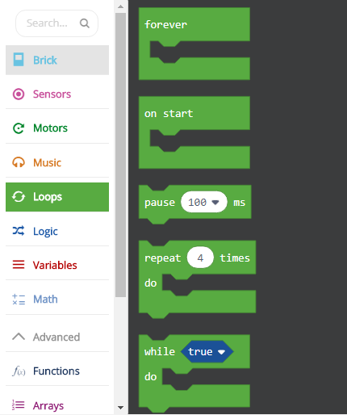
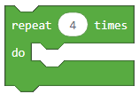
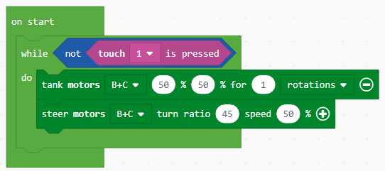

Projektni zadatak - Naprijed - Natrag¶
U složenijim aplikacijama potrebno je nekoliko puta izvesti neku radnju, sve dok se ne ispune neki uvjeti za njezin prekid.
Petlje (Loops) pružaju mogućnost ponavljanja istog dijela koda dok se ne ispuni jedan od uvjeta za njen prekid.
Izvršаvаnje petlje može se kontrolirаti nа više nаčinа i to:
Unlimited (bez ograničenja),
Sensor (radi dok program ne reagira na jedan od senzora),
Time (može biti vremenski ograničeno),
Count (određeni broj puta se može unaprijed odrediti) i
Logic (sve dok je ispunjen određeni logički uvjet).
Prvo ćemo objasniti petlje na jednostavnom primjeru beskonačnog kretanja robota naprijed i natrag.
Taj ćemo zadatak riješiti tako da ga podijelimo na dva dijela. Prvi dio sastojat će se od dva bloka s kojima će se robot kretati naprijed i natrag.
Povucite blok  na radnu površinu, kliknite na znak
na radnu površinu, kliknite na znak + i odaberite opciju “rotacije”. Zatim postavite broj rotacija na 1.
Konačno, da bi robot mogao krenuti naprijed, vrijednost (koja predstavlja snagu) mora biti pozitivna, postavit ćemo je 50.
U drugom bloku postavit ćemo snagu motora na -50, tako da se robot može kretati unatrag. Da bi se robot mogao neprekidno kretati (bez zaustavljanja), moramo gore navedeni blok staviti u beskonačnu petlju, to ćemo postići dodavanjem bloka  , što će omogućiti robotu da ide naprijed i natrag kontinuirano (neograničen broj puta), sve dok se program zaustavi silom.
, što će omogućiti robotu da ide naprijed i natrag kontinuirano (neograničen broj puta), sve dok se program zaustavi silom.
Izgled programa:

Spojite EV3 Brick s računalom putem USB kabela i preuzmite .uf2 datoteku na svoje računalo klikom na tipku  . Povlačenjem datoteke na EV3 spremno je za početak rada.
. Povlačenjem datoteke na EV3 spremno je za početak rada.
Također možemo ograničiti kretanje robota; na primjer, želimo da se robot tri puta pomiče naprijed i natrag.
Da bismo to učinili, upotrijebit ćemo petlju u kojoj se blokovi izvode određeni broj puta. Robot će se pomicati naprijed i natrag tri puta.
Da biste postavili da se niz kodova zaustavi nakon određenog broja ponavljanja, morate povući blok , gdje ćemo definirati koliko puta se neka akcija mora ponoviti u blok  . U našem slučaju vrijednost će biti 3.
. U našem slučaju vrijednost će biti 3.
Izgled programa:

Spojite EV3 Brick s računalom putem USB kabela i preuzmite .uf2 datoteku na svoje računalo klikom na tipku . Povlačenjem datoteke na EV3 spremno je za početak rada.
Treći način na koji možemo ponoviti određenu radnju je pomoću bloka koji će je ponavljati sve dok nije ispunjen određeni uvjet. Ovaj bi se blok trebao koristiti kad ne znamo koliko nam je puta potrebno ponoviti neki dio koda, pa ga želimo ponavljati sve dok se ne ispuni određeni uvjet.
Kako bismo demonstrirali uvjetno ponavljanje, stvorit ćemo program koji će omogućiti robota da se kreće oko okvira u obliku kvadrata sve dok ne naiđe na prepreku (dodirne kutiju).
Kod izgleda ovako:
Spojite EV3 Brick s računalom putem USB kabela i preuzmite .uf2 datoteku na svoje računalo klikom na tipku . Povlačenjem datoteke na EV3 spremno je za početak rada.
Ovaj se zadatak može riješiti pomoću funkcija.
Neki složeni problemi mogu se lakše riješiti ako se podijele u manje jedinice koje se mogu samostalno riješiti. U drugim se programskim jezicima ove jedinice nazivaju podprogrami: funkcije i postupci. Znamo da kod možemo pojednostaviti pomoću naredbi za ponavljanje. Međutim, to često nije dovoljno.
Kad god želimo da robot ponovi neku aktivnost unutar programa ili u nekom program drugom programu, možemo koristiti postupke, ili točnije, blok .
Budući da smo u prethodnim primjerima koristili kretanje naprijed i natrag, pokušati ćemo koristiti ta dva bloka za stvaranje vlastite funkcije naprijed i natrag. Kako se to radi?
Prvi korak je stvaranje Funkcije s aktivnostima koje će se ponoviti. U našem slučaju to će biti robot koji se stalno kreće naprijed i natrag.
Funkciju stvaramo tako što otvorimo kategoriju Function (1), kliknemo na gumb Make a Function (2) i unesemo naziv funkcije koju želimo stvoriti (3). Završili smo s stvaranjem funkcije kada kliknemo na gumb OK (4).

Dodajte dva bloka za kretanje, prvi blok će omogućiti robota da pomakne jednu rotaciju prema naprijed, a drugi blok će mu omogućiti da pomakne jednu rotaciju unatrag.
Pogledajte funkciju prema naprijed i natrag:

Da bi se funkcija koristila u programu, potrebno ga je “pozvati” pomoću bloka  .
.
Izgled koda za pomicanje prema naprijed i natrag pomoću funkcije:

Spojite EV3 Brick s računalom putem USB kabela i preuzmite .uf2 datoteku na svoje računalo klikom na tipku . Povlačenjem datoteke na EV3 spremno je za početak rada.